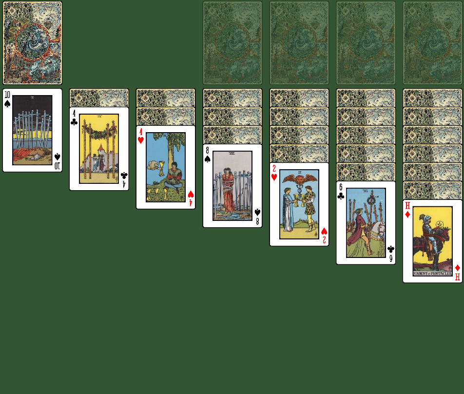
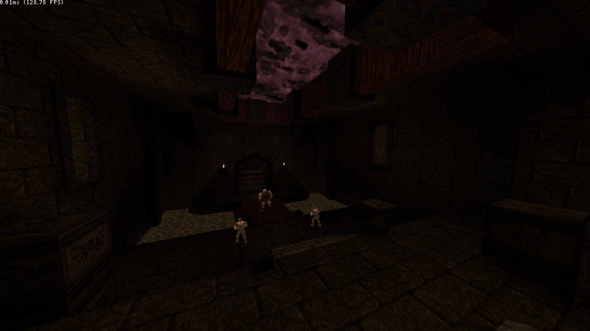
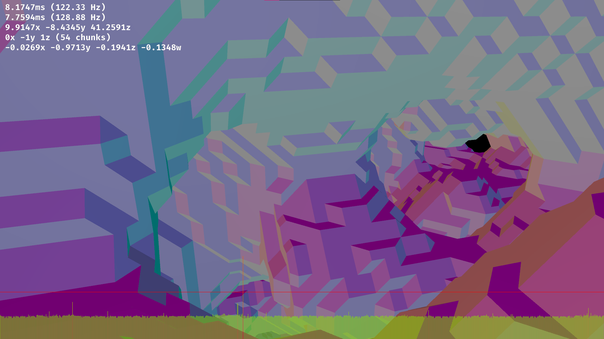
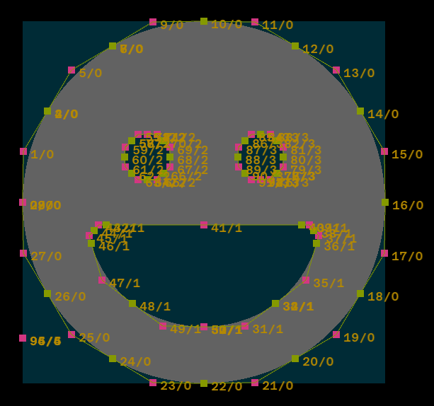
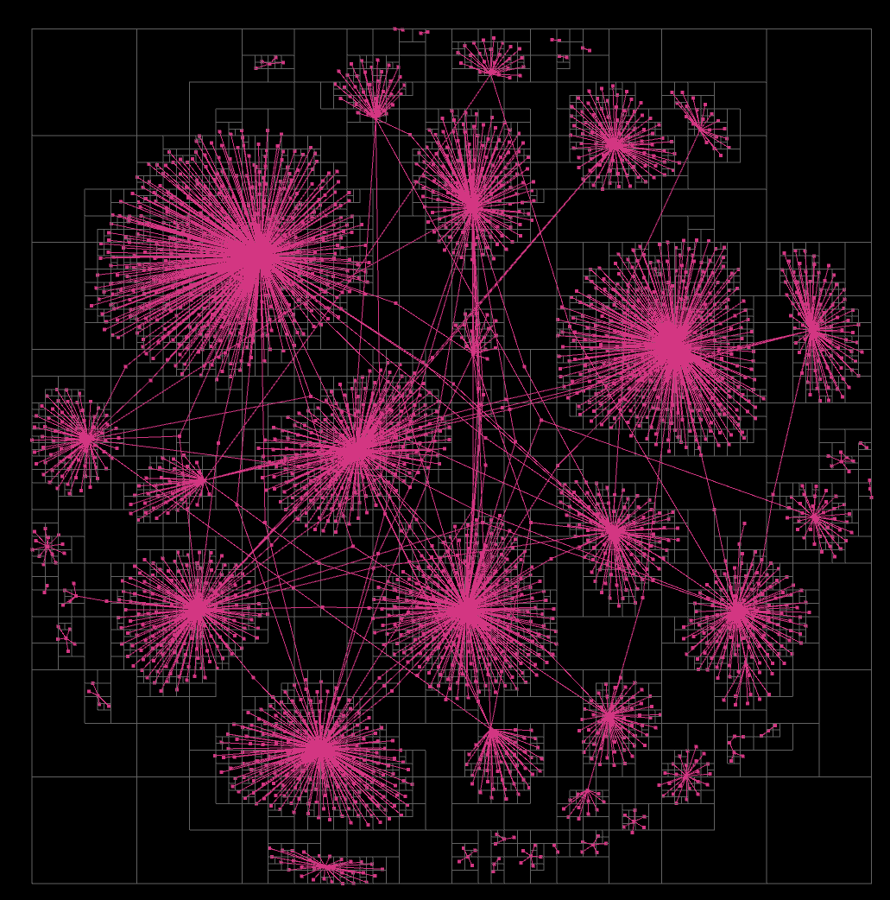

Tarot Solitaire Card GameSimple card game based on Solitaire and inspired by Balatro. Extremely WIP.

KwarkA Quake level viewer written in C++ and leveraging modern Vulkan features for efficient rendering of classic game environments.

Marching CubesGenerates an infinite cave using 3D Perlin noise via a compute shader that is triangulated via marching cubes.

TTF Loader / RendererLoad & parse TTF files and render characters using stencil buffers that calculate winding numbers.

Force-directed GraphsThis project showcases a force-directed graph layout rendered in real-time using Vulkan. It loads Twitter follow data (nodes, edges) and applies a physical simulation to position the nodes.